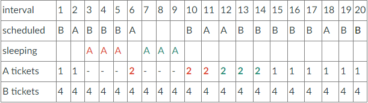

LINK:
I am not able to provide a link to this project yet as it is also a large project ongoing for a university project. After a given amount of time and with permission, a link of the project will be provided in the future.
Currently, I am trying to explore on how a scheduler works on an operating system (CPU). Here, I will be implementing a basic lottery scheduler that will help boost the priority of certain processes. Hence it will be boosting the priority of sleeping processes so it also gets its fair share of CPU usage. This will be done on xv6 kernal and explore its context switches.
- A XV6 is
-
A simple operating system developed by MIT for the purpose of educational practices. It is a modern reimplementation of the 6th edition of UNIX in ANSI C.
CURRENT STAGE/BUGS
Currently, I am researching how xv6 works and doing small experiments to get the feel for the OS. I will be having to implement 3 basic system calls first, of which are setting the number of tickets, then setting the rseed variables, and lastly some sort of call that grabs information from the kernal to test if the scheduler works (pid number, tickruns, how many tickets a process has, etc.. information will be provided).
Whats next?
I will need to create some kind of user-level applications that will help determine if the scheduler is working as intended. This should create multiple instances of loops with all different tickets to check its outcome.